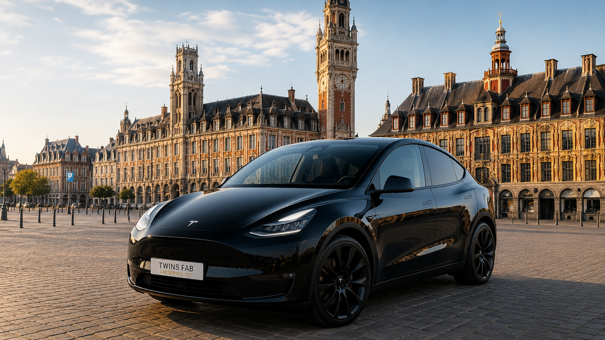

Votre chauffeur privé à Lille
Votre chauffeur privé VTC basé à Lille. Disponible 24h/24 et 7j/7 uniquement sur réservation. Déplacements en France, Belgique, Pays-Bas et Allemagne.
Réserver maintenant⭐ Tarif minimum : 30 €

Tesla Model Y • 100% électrique • Jusqu'à 4 passagers • Climatisation • Wi-Fi gratuit
Pourquoi nous choisir
Ponctuel, courtois et expérimenté.
Véhicules propres, climatisés , Wi-Fi gratuit, chargeurs USB , grand coffre et confortables.
Idéal pour vos trajets privés, professionnels et transferts Gare et Aéroports.
Chauffeur ponctuel, discret et disponible 24h/24 sur réservation.
NOS SERVICES
Voyagez dans un véhicule 100 % électrique, silencieux, confortable et moderne.
Gare Lille Europe, Gare Lille Flandres, Paris Gare du Nord, Gare du Midi Bruxelles,Lille-Lesquin, Paris CDG, Orly, Bruxelles, Charleroi, Amsterdam et vers les pays voisins
Déplacements partout en France, en Belgique, aux Pays-Bas, en Allemagne et en Europe sur demande.
Disponible 24h/24 et 7j/7 uniquement sur réservation, minimum 12 heures avant le départ.
Aéroports desservis
Nos engagements
Contact rapide
Téléphone / WhatsApp : +33 6 21 14 47 67
Email : funsfab@gmail.com
Localisation : Lille – France
Faire une réservationPonctuel, courtois et expérimenté.
Uniquement sur réservation.
Espèces ou carte bancaire.
France, Belgique, Pays-Bas et Allemagne.
Ce que nos clients pensent de notre service VTC
⭐⭐⭐⭐⭐
Service professionnel, chauffeur ponctuel et véhicule très confortable.
- Client satisfait⭐⭐⭐⭐⭐
Trajet agréable, réservation simple et réponse rapide sur WhatsApp.
- Client satisfait⭐⭐⭐⭐⭐
Très bon service pour les transferts vers les gares et aéroports.
- Client satisfait